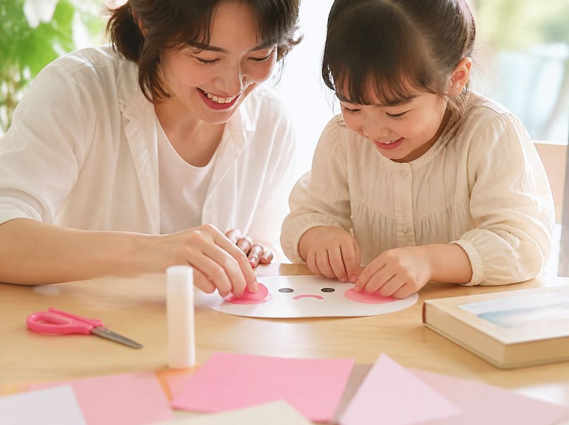

Ateliers parents-enfants à Grenoble
Des ateliers chaleureux pour les enfants de 2 à 8 ans et leurs parents : une histoire en chinois ou en anglais, puis un temps de bricolage inspiré du récit.
Une façon douce et joyeuse d'éveiller la curiosité des enfants pour une autre langue et une autre culture, en jouant et en créant ensemble.

Une lecture animée en chinois ou en anglais, avec des gestes, des images et des mots simples.
Enfants et parents réalisent ensemble une création inspirée de l'histoire.
Et avec quelques nouveaux mots à réutiliser à la maison.
Contactez-moi pour connaître les prochaines dates et réserver une place. Tarifs sur demande.